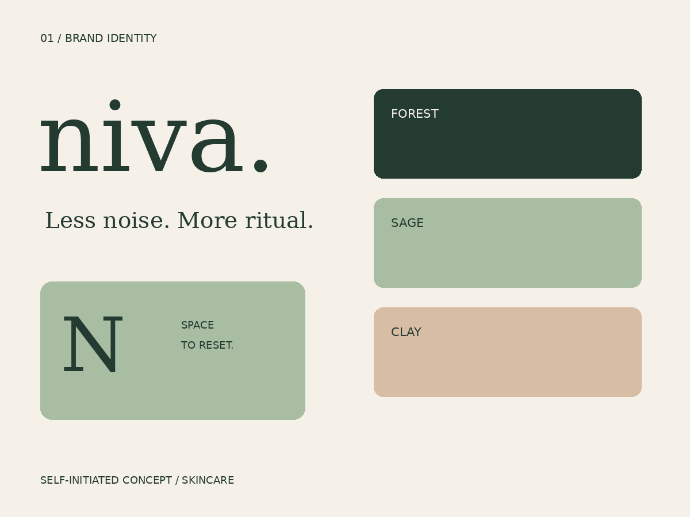
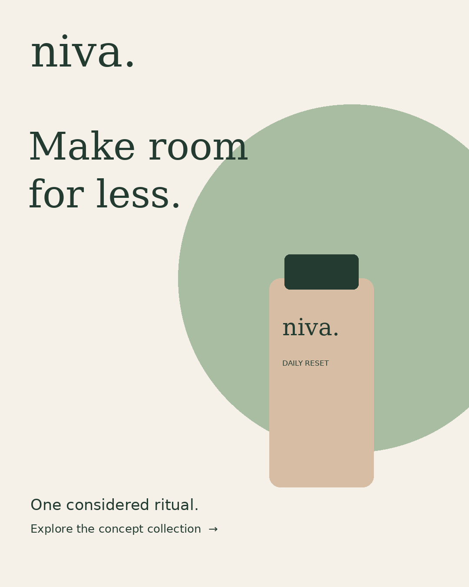

One recognizable wordmark
A lowercase serif wordmark balances familiarity with a considered, premium tone. The full stop becomes a small recurring identity device.
A quiet skincare identity built around one clear daily ritual.
Download project source
Create an approachable premium skincare concept for people overwhelmed by complicated routines. The visual system should feel calm, legible and coherent across a shelf, a feed and a small mobile screen.
Working adults looking for a simple daily routine. This is a target-audience hypothesis, not a finding from customer interviews.
A lowercase serif wordmark balances familiarity with a considered, premium tone. The full stop becomes a small recurring identity device.
Forest, sage and clay create a restrained hierarchy. Dark forest carries essential copy; lighter tones distinguish formats.
Launch copy speaks about routine and simplicity. It avoids clinical efficacy claims that cannot be substantiated.
Brand first, ritual name second, format last. The visual mockups test hierarchy; regulatory copy, dielines and supplier specifications remain production tasks.
Contrast review: clay labels and forest caps separate the packaging from the sage background. Large ritual naming supports recognition when the artwork is viewed as a thumbnail. Consumer readability testing remains proposed.
Identity board, three packaging form studies, 1080 × 1350 launch creative, editable SVG sources and PNG previews.


Interview five target consumers about category expectations, compare five relevant brands across shelf and mobile touchpoints, and test recognition and readability at thumbnail size. Document the findings before revising the audience hypothesis.
Use a brief → concept review → production → quality review → handoff sequence. Confirm scope and approval owners, record feedback as actionable changes, and check final assets in their actual placement context.